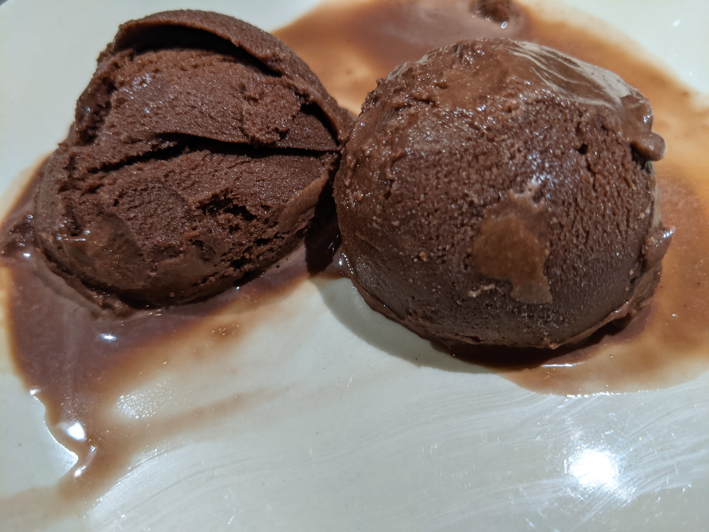

Chocolate Gelato

Ingredients
Custard:
100g bocha sweet
5 egg yolks
1 tsp vanilla
Base:
900g milk
40g dutch-processed cocoa powder
Instructions
-
Whisk custard on a bowl.
-
Simmer base on a saucepan, until fully incorporated. Whisk frequently.
-
Very slowly (one laddle at a time) mix in hot base into custard, whisking constantly so the eggs don't scramble.
-
Put mix on the fridge until fully chilled.
-
Churn in the ice cream maker for around 20 minutes.
The ice-cream runs a little icy. That's how I like it. In order the make it more creamy instead, substitute the egg yolks for 450ml heavy cream.